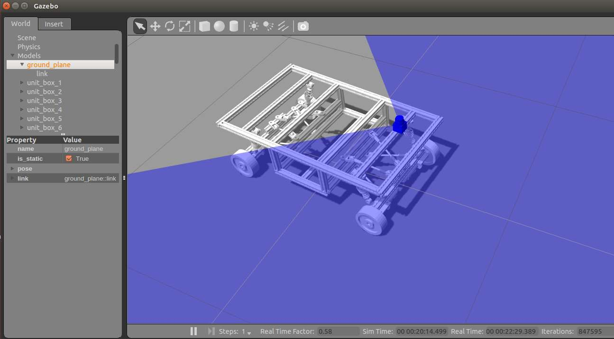

What is it?
It is a project of building the navigation system (hardware and software) of an omnidirectional autonomous guided vehicle (AGV). The project is based on Robot Operating system (ROS), Gazebo simulation platform and an omnidirectional AGV prototype. It is my undergraduate capstone project and I worked with a master student. My main work is in implementing software packages and Lidar hardware installation and communication，and system integration with other hardwares (encoders, IMU and micro-controllers etc). The system is shown in the two Figures below:

The navigation system includes four parts:
- SLAM:
building the map of environment
- Localization:
know where it is in the map
- Path and motion planing
how to get from point A to point B
- Client Node
Give destinations in the specific order to finish the client job
Strategy
- SLAM
Gmapping from OpenSLAM. Also have tried HectorSLAM.
- Localization:
AMCL package using Monte Carlo localization. This method combined with lidar can even let the robot recover from odometry or IMU errors since these sensors are "blind".
- Path and motion planning
Move_base package. Global planner is A* while Local planner is DWA
- Client Node
Actionlib package. I used this package to let the robot automatically wander around the room with a node written in python.
After breaking down all the functions, here is what I did step by step:
- Building the 3D model in Gazebo platform with model in SolidWorks.
It includes some URDF works. Also virtual environemnt was built:

- Hardware in the loop. Test the software packages with the virtual environment but part of feedback (odometry) was from the real sensors. This was done by lifting the AGV and connected it with the laptop as shown in the figure below.
This is just a safer way before actually implementing it on a real vihicle.
- Implemented in real AGV by building the map of real indoor environemnt.
- Test the localization quality by controlling the robot via keyboard
- Once the localization is fine, test the motion planner by giving A and B points.
- Test the Client node by sending request to move_base: let the robot take a tour around the environment.
It includes some URDF works. Also virtual environemnt was built:
Results
Building map with virtual environment
Map of the lab room built by Gmapping using Lidar data
Finally, just a gif showing how the AGV was wandering around the room automatically.

What have I learnt from this project?
Implemented navigation packages in ROS and got used to command lines in Linux. Learnt how to write nodes (both in Python and C++) in ROS to listen and send messages to topics. How to read Lidar data and put it on ROS.
Mathmatics behind every package is very deep. Let alone implementing each function in codes. Open source platform ROS allow me to stand on the shoulder of giants. For sure, the performance of the navigation system is way far from satisfactory. To improve it, we have to understand the Mathmatics and Algorithims behind it. But given my limit time, I was not able to dig further. However, I am definitely more interested in Robotics after this project and am very passionate about learning more.